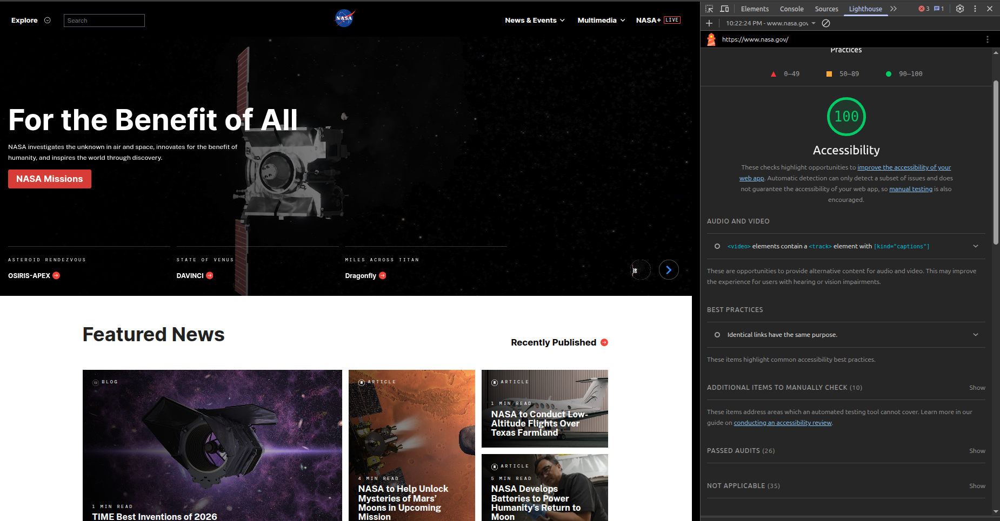
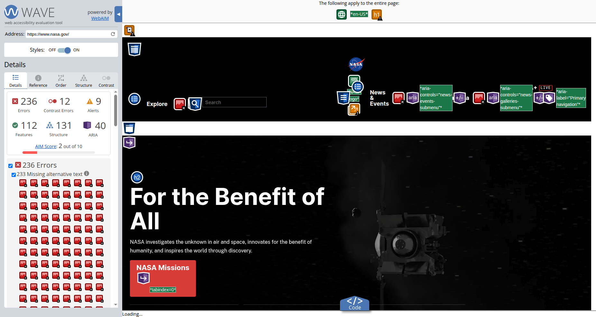

Website Overview
URLhttps://nasa.gov
Name
National Aeronautics & Space Agency
Target Audience
Those who are interested in space exploration, or extremly high fidelity photographs of the planet for various creative purposes.
Organization & Navigation
The index of the site has an "Explore" button, a Menu to the Right & links on the bottom, the menu on the top right seem to act as the primary menu as they persist throughout the entire website.
CRAP Design Principle
The NASA Site Employs Repetition very well. As you move throughout the website, you will notice the Menu consisting of the Main Items "News & Events", "Multimedia" & "NASA+ Live" persist no matter where you go on the site. the site is very large & has seemingly endless content, but the header never seems to vary.
Accessibility Audit
Audit Score: 100%


Effectiveness
Whether you are on the site for video, history, launches or research, the navigation makes it clear how to get there.
Efficiency
The best feature of the site by far is the persistent menu. Outside of the index page, things are where they belong, e.g. menus are separated from articles. Media is in the media section & news is in the news section. The contrast ratio 8.59:1 which is above the guidline.
Engagement
There are very large images & videos when you enter the site. This is probably subjective. While not my cup of tea. If I needed something from "Space Research" there's not many other places I could go.
Recommendation
A hint to my recommendation can be found in the WAVE Report screenshot. There are 236 Errors immediately present even though the site has a 100% accessibility score. I would recommend NASA update all of their images to have ALT text. It seems NASA's web-site would not be as pleasant on a slow connection.